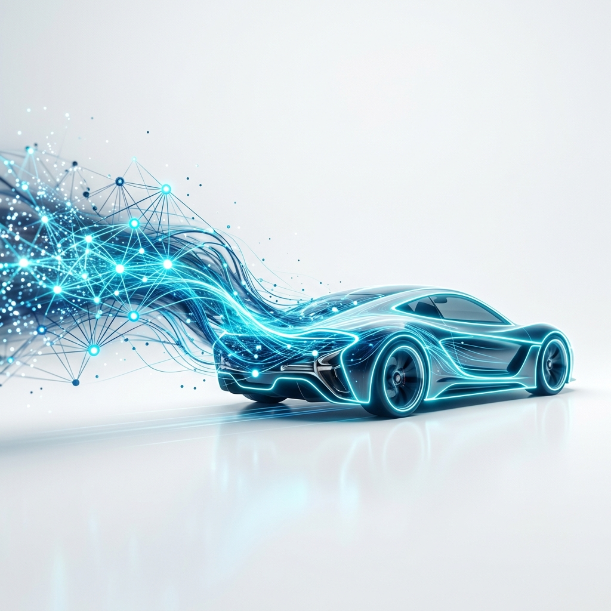
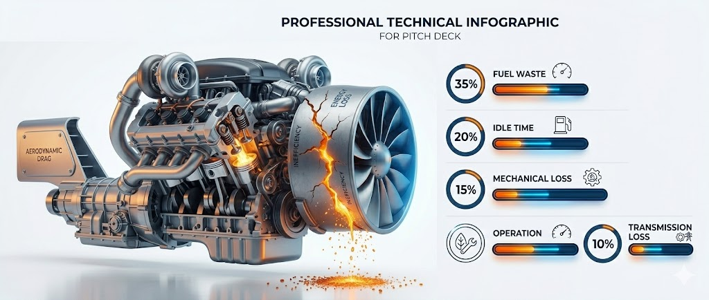
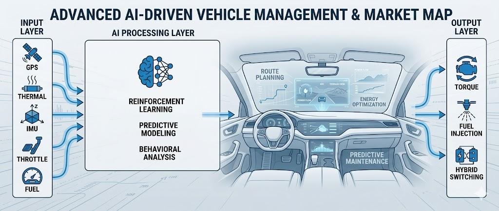
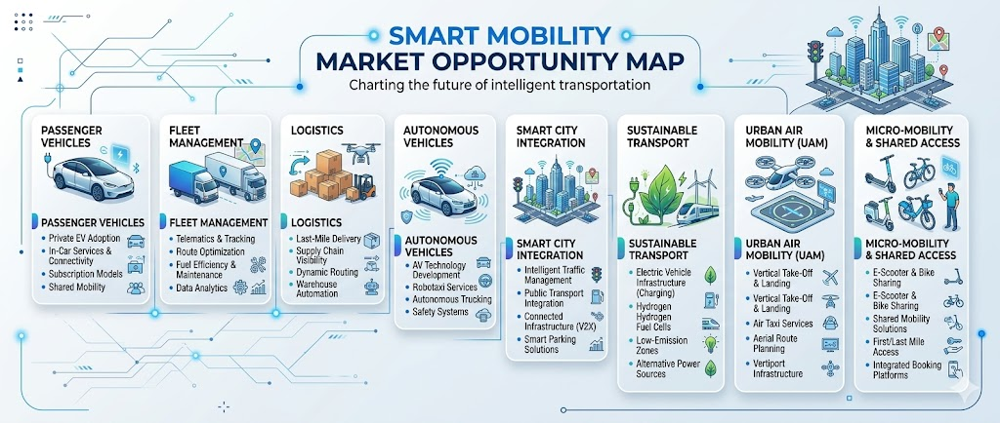
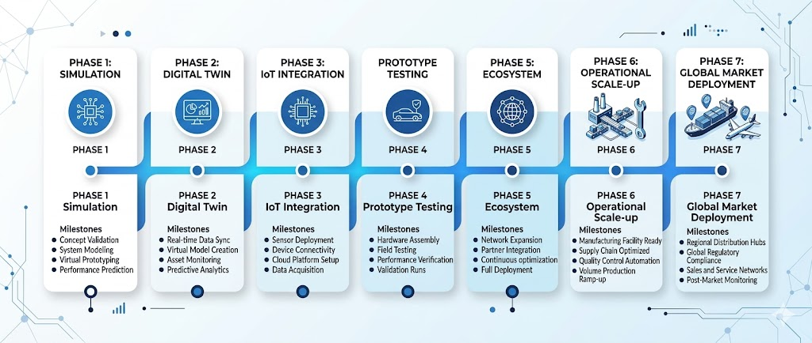

Neuronify Engine is an AI-driven adaptive powertrain system that learns driver behavior, predicts road conditions, and dynamically optimizes hybrid energy usage to maximize fuel efficiency and reduce emissions in real time.

Modern vehicles suffer from major inefficiencies caused by non-adaptive engine behavior, costing drivers money and the planet precious resources.
Aggressive acceleration, unnecessary braking, inefficient throttle usage, and traffic idle time cause significant fuel loss that current engines cannot correct in real time.
Today's "Eco" systems are rule-based and generic — they don't learn from individual drivers, can't predict conditions, and fail to optimize dynamically.
Existing hybrids rely on predefined switching logic. They cannot predict energy demand, adapt to conditions, or intelligently balance fuel via AI decision-making.
Inefficient mobility contributes heavily to fuel overconsumption, carbon emissions, and unsustainable transportation infrastructure worldwide.

Neuronify Engine sits between human intent and vehicle execution, creating a self-learning adaptive driving intelligence layer.
AI continuously determines the most efficient throttle response and torque distribution.
Real-time fuel usage optimization based on driving conditions and learned behavior.
AI-driven decisions on energy source prioritization — petrol vs hydrogen-assisted systems.
Maximized energy recapture during braking and downhill scenarios.
Self-learning system that adapts uniquely to each driver's habits and routes.
Neuronify Engine combines machine learning, predictive analytics, real-time sensor intelligence, and adaptive hybrid optimization into a unified AI-driven mobility system.
The system continuously learns using multiple real-world parameters to build a comprehensive understanding of every drive.
Analyzes GPS data, road elevation, terrain slope, route patterns, and urban vs highway conditions to predict acceleration demand and optimize torque.
Monitors traffic density, congestion patterns, stop-and-go frequency, and signal-heavy routes to proactively reduce unnecessary acceleration and idle waste.
Creates personalized driver profiles by analyzing acceleration intensity, braking habits, speed preferences, steering patterns, and driving schedules.
Processes live telemetry from IMU, vibration sensors, thermal monitors, RPM, throttle pressure, fuel flow, and energy recovery metrics.
Dynamically determines which energy source — petrol or hydrogen-assisted — should be prioritized based on real-time driving conditions and demand.
Each mode dynamically adjusts acceleration response, torque delivery, and energy optimization in real time.
Designed for urban traffic and long-distance economy. Slower acceleration response, conservative torque delivery, and aggressive fuel optimization.
Moderate acceleration with adaptive optimization. Perfectly balanced energy switching for everyday commuting and mixed driving conditions.
For emergencies, rapid acceleration, and overtaking. Higher torque output with temporarily reduced efficiency constraints when you need it most.
Data flows from sensors through AI processing to real-time vehicle optimization.

Prototype simulation results demonstrate strong potential for intelligent AI-driven mobility optimization.
Consistent torque delivery reducing mechanical stress
AI-corrected throttle patterns minimize waste
Predictive traffic analysis cuts unnecessary idling
Smarter energy source switching and recovery
Improvement in Simulated Fuel Utilization
Compared to baseline non-adaptive engine systems
| Aspect | Traditional Engine Systems | Neuronify Engine |
|---|---|---|
| Engine Logic | Static, rule-based | ✓ Adaptive AI optimization |
| Eco Modes | Generic for all drivers | ✓ Personalized learning |
| System Type | Reactive — responds after events | ✓ Predictive — anticipates ahead |
| Hybrid Switching | Fixed predefined logic | ✓ Intelligent energy balancing |
| Optimization | Manual calibration | ✓ Self-learning optimization |
Personalized AI optimization for everyday consumer driving.
Fleet-wide fuel savings and predictive maintenance.
Route-aware energy management for delivery networks.
AI integration layer for self-driving vehicle powertrains.
Connected vehicle intelligence for sustainable urban planning.
Emission reduction at scale through intelligent driving.

Core AI algorithms, simulation environment, and preliminary performance validation.
Real-time vehicle digital twin with comprehensive telemetry monitoring and analytics.
Hardware sensor integration with edge computing for onboard AI processing.
Real-world vehicle testing with adaptive learning validation and performance tuning.
Full ecosystem integration — fleet management, smart city APIs, and autonomous support.

AdventureX represents the intersection of AI innovation, ambitious engineering, sustainability, and future-focused technology.
Self-learning adaptive systems that evolve with every drive.
Next-generation transportation powered by intelligent engineering.
Reducing emissions and fuel waste through intelligent optimization.
Where vehicles continuously learn from humans, predict energy demand, and optimize themselves to create safer, smarter, and more sustainable mobility for the future.
Let's Connect →